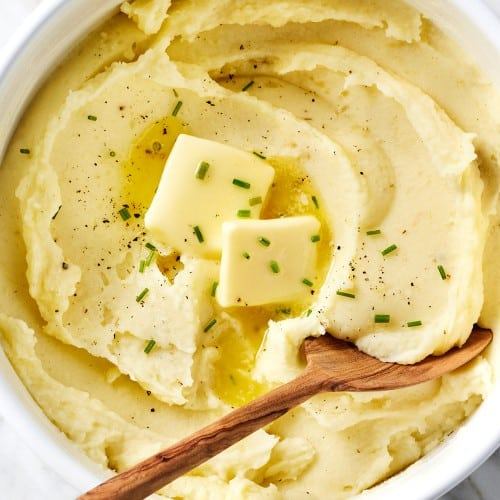

Home
Mashed Potatoes

A great bowl of mashed potatoes starts with the right potatoes and a few simple techniques. Russets make these mashed potatoes light and fluffy, while warm milk and melted butter help create a smooth, creamy texture without cooling them down. You can add garlic for extra savory flavor, or keep them classic. This easy stovetop side is just as at home with a weeknight dinner as it is on a Thanksgiving or holiday table.
Ingredients
- 2 pounds russet potatoes, peeled and cut into 1-inch pieces
- 3 cloves garlic, peeled (optional)
- 1 cup whole milk
- 3 tablespoons unsalted butter
- Salt and pepper to taste
Instructions
- Place the potatoes and garlic in a large pot and cover with cold water. Bring to a boil over high heat, then reduce the heat to medium and simmer until the potatoes are tender, about 15-20 minutes.
- Drain the potatoes and garlic, then return them to the pot. Mash them with a potato masher or fork until smooth.
- In a small saucepan, heat the milk and butter over low heat until the butter is melted and the mixture is warm.
- Gradually add the warm milk and butter mixture to the mashed potatoes, stirring until smooth and creamy. Season with salt and pepper to taste.
- Serve immediately, garnished with additional butter or fresh herbs if desired.